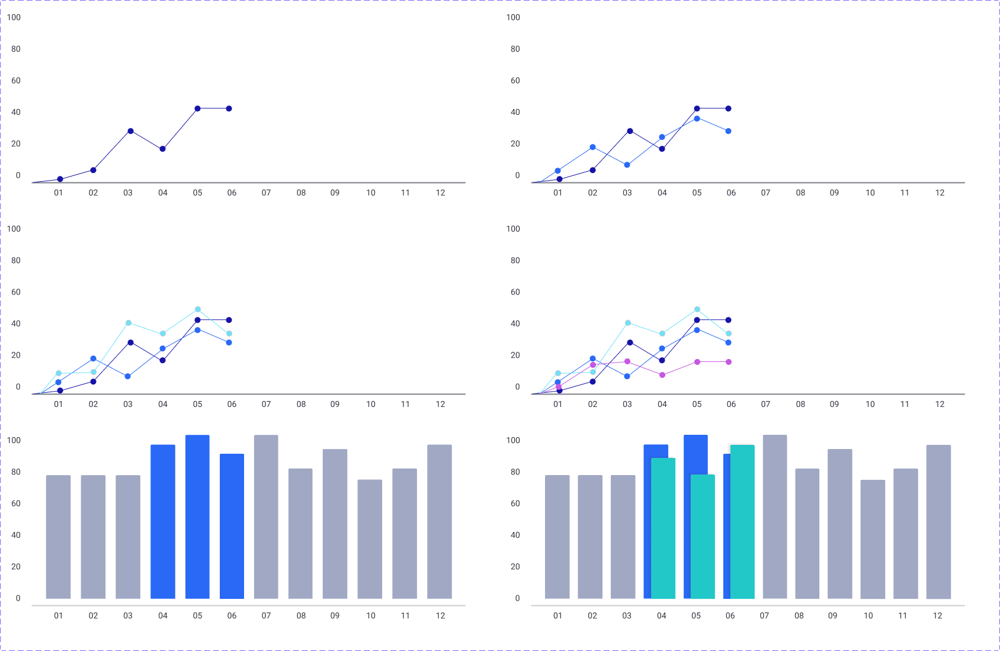
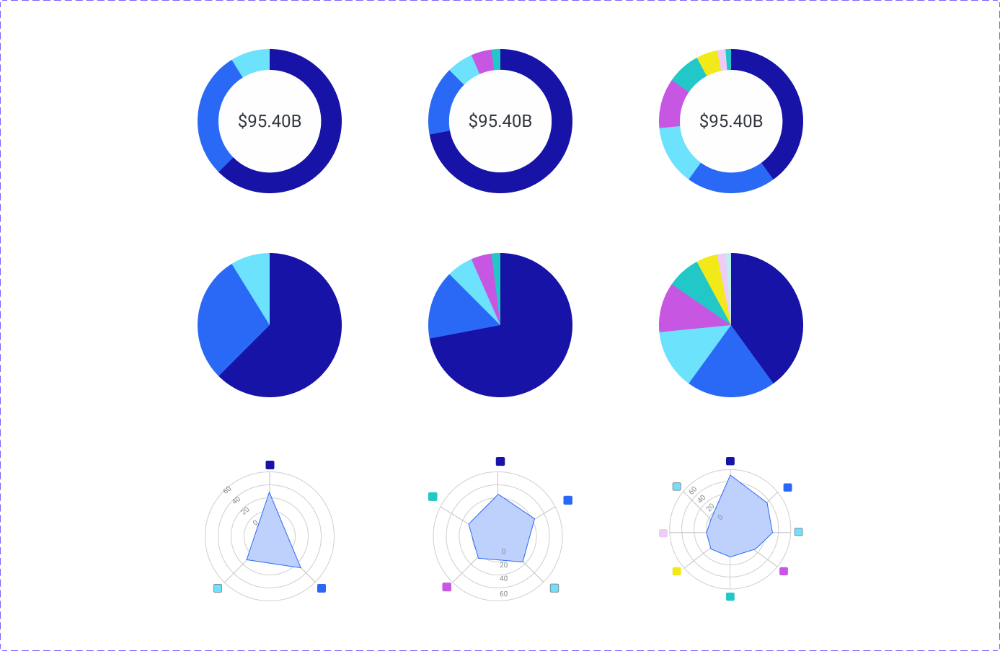

Dashboard & Data Visualizations
Dashboards are tools used by business intelligence professionals to examine goals at glance. They provide high-level information such as anomalies and trends, and help business professionals understand the big picture. Dashboards often have multiple tabs and come with a plethora textual information, buttons, filters, and visualizations. This is my attempt at creating a dashboard with limited research and rudimentary knowledge of data visualization.
 Kevin Towner•3 minute read
Kevin Towner•3 minute read
Breakdown
Timeframe:
- • 2.26.22 - Ongoing
- • 1 week
Role:
- • Product Designer
Tools:
- • Figma
Case Study:
- • HTML
- • CSS
Introduction
Problem Statement
With the amount of user interface components involved in dashboard design, it's important to use systems of consistency and patterns to help guide the dashboard users and audiences.Dashboard UI can be complicated for both users and designers without systems in place to aid in component consistency.
Initial Research
Google Analytics
Color styles used in dashboardGoogle Analytics reports
I referenced Google Analytics for design inspiration, especially when it came to layout and widget design. The reports section of Google Analyitcs utilizes side navigation to access different products while the top navigation houses breadcrumbs, account options, and search features.
Surmised Iterations
First Iteration
 First iteration
First iteration
Second Iteration
 Second iteration
Second iteration
Data Visualization
Large examples
 Large data visualization componentsSmall examples
 Small data visualization cards componentsCard Variants
KPI card
 Column and line graph components
Column and line graph components
Donut chart card
 Donut, pie, and radar chart components
Donut, pie, and radar chart components
Column and line graph cards
large data visualization cardsAdditional Research
Data Visualization: Best Practices
- • LinkedIn Learning
- • 1:38m
- • 32 videos
- • Skills covered: data visualization
Naming conventions
Written out naming conventions and layer titles for Figma's assets library. Data visualization categories are:
- 1) relationships
- 2) comparison
- 3) composition
- 4) distribution
Each category's visualizations fall under:
- a) static
- b) over time
Improved Visualizations
Column graphs
Improved radar charts (comparison/static/radar)Pie and donut charts
Improved circle charts (composition/static/pie & donut)New Visualizations
Visual Assets
Color styles
 Dashboard color styles
Dashboard color styles
Font styles
Font stylesMain Takeaways
Dashboard
As an ongoing project it became apparrant that user research, and feedback from internal stakeholders is extremely important for designing a purposeful, and functioning dashboard. Midway through the project, I decided to shift focus from designing dashboard components and cards, to designing consistent and reusable data visualization components.
Data visualization
Following data visualization best practices, I redesigned specific data visualization components such as line graphs and column graphs, and also differentiated between column graphs and histograms. I also reorganized the naming conventions for visualziation components into categories (a) relationship, (b) comparison, (c) composition, and (d) distribution.